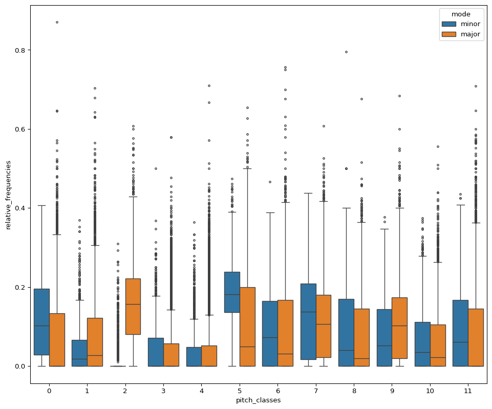
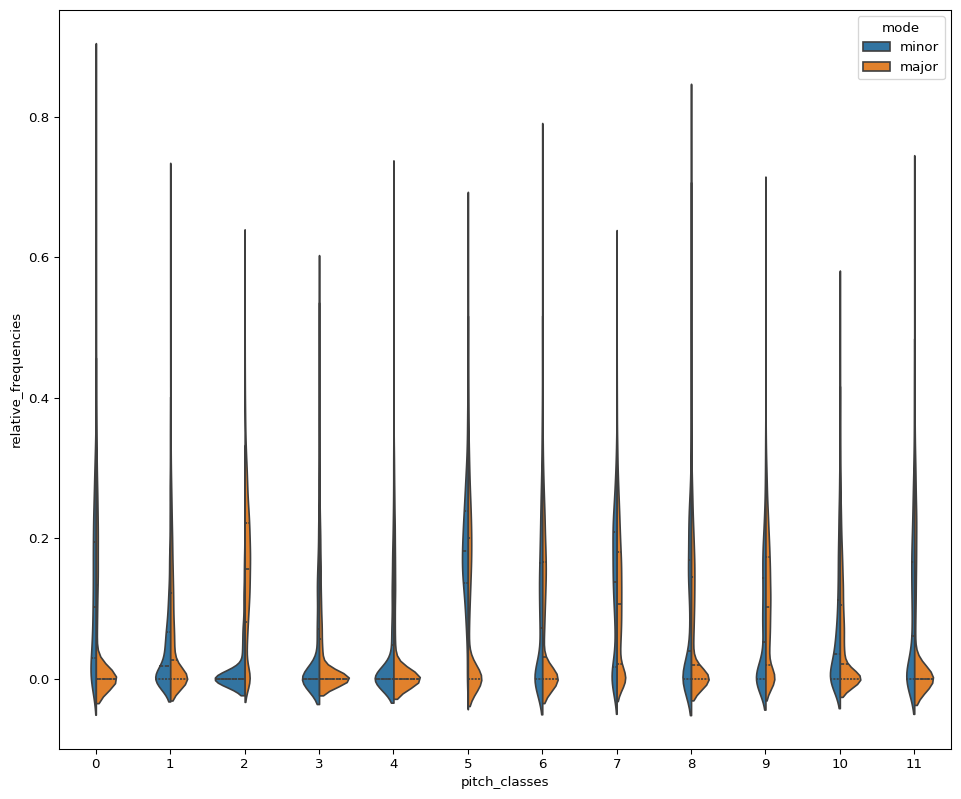

import numpy as np # for numerical computation (we need it to transpose melodies)
import pandas as pd # to organize our data in tabular format
import matplotlib.pyplot as plt # to visualize results
import seaborn as sns # more advanced visualization tools
# directly show the plots in the notebook
%matplotlib inline
import re # regular expressions: for pattern finding in stringsStep 1: Preprocessing
Read the data and create new column that contains a list of the pitches of the melody
<<<<<<< HEADdata = pd.read_csv("../data/essen_data.csv", sep='\t', index_col=0)
data.head()| region | title | key | DGIs | spelled_pitches | |
|---|---|---|---|---|---|
| 0 | africa | Muwaschah Lamma Bada | g minor | ['P4', 'M2', 'm2', 'M2', 'M-2', 'P1', 'm-2', '... | ['D5', 'G5', 'A5', 'B-5', 'C6', 'B-5', 'B-5', ... |
| 1 | mexico | CUCA 1 | F major | ['P1', 'P1', 'P4', 'M3', 'M-6', 'P1', 'P1', 'P... | ['C4', 'C4', 'C4', 'F4', 'A4', 'C4', 'C4', 'C4... |
| 2 | mexico | CUCA 2 | F major | ['P1', 'P1', 'P4', 'M3', 'M-6', 'P1', 'P1', 'P... | ['C4', 'C4', 'C4', 'F4', 'A4', 'C4', 'C4', 'C4... |
| 3 | mexico | CUCA 1 | F major | ['P1', 'P1', 'P4', 'M3', 'M-6', 'P1', 'P1', 'P... | ['C4', 'C4', 'C4', 'F4', 'A4', 'C4', 'C4', 'C4... |
| 4 | mexico | CUCA 2 | F major | ['P1', 'P1', 'P4', 'M3', 'M-6', 'P1', 'P1', 'P... | ['C4', 'C4', 'C4', 'F4', 'A4', 'C4', 'C4', 'C4... |
Wee see that the (preprocessed) data comes with the features region, title, and key, and is represended as directed generic intervals (DGIs) and spelled_pitches.
For this excercise we will only work with the data in the key and spelled_pitches columns. The spelled_pitches entries look like a list of pitches but they are actually strings ('[', ',' and whitespaces are characters). Therefore we need to first transform it into a representation that we can work with. We will not go into details here but basically we just remove everything that we don’t need from the string until only the spelled pitches are left.
data['spelled_pitches'] = \
data['spelled_pitches'].str.replace("', '", " ").str.replace("['", "").str.replace("']", "").str.strip()data['spelled_pitches'] = \
data['spelled_pitches'].str.replace("', '", " ").str.replace("['", "").str.replace("']", "").str.strip()data.head()| region | title | key | DGIs | spelled_pitches | |
|---|---|---|---|---|---|
| 0 | africa | Muwaschah Lamma Bada | g minor | ['P4', 'M2', 'm2', 'M2', 'M-2', 'P1', 'm-2', '... | D5 G5 A5 B-5 C6 B-5 B-5 A5 A5 G5 G5 F#5 G5 A5 ... |
| 1 | mexico | CUCA 1 | F major | ['P1', 'P1', 'P4', 'M3', 'M-6', 'P1', 'P1', 'P... | C4 C4 C4 F4 A4 C4 C4 C4 F4 A4 F4 F4 E4 E4 D4 D... |
| 2 | mexico | CUCA 2 | F major | ['P1', 'P1', 'P4', 'M3', 'M-6', 'P1', 'P1', 'P... | C4 C4 C4 F4 A4 C4 C4 C4 F4 A4 F4 F4 E4 E4 D4 D... |
| 3 | mexico | CUCA 1 | F major | ['P1', 'P1', 'P4', 'M3', 'M-6', 'P1', 'P1', 'P... | C4 C4 C4 F4 A4 C4 C4 C4 F4 A4 F4 F4 E4 E4 D4 D... |
| 4 | mexico | CUCA 2 | F major | ['P1', 'P1', 'P4', 'M3', 'M-6', 'P1', 'P1', 'P... | C4 C4 C4 F4 A4 C4 C4 C4 F4 A4 F4 F4 E4 E4 D4 D... |
Let’s also drop the columns that we don’t need for this excercise.
<<<<<<< HEADdel data['region']
del data['DGIs']del data['region']
del data['DGIs']data.head()| title | key | spelled_pitches | |
|---|---|---|---|
| 0 | Muwaschah Lamma Bada | g minor | D5 G5 A5 B-5 C6 B-5 B-5 A5 A5 G5 G5 F#5 G5 A5 ... |
| 1 | CUCA 1 | F major | C4 C4 C4 F4 A4 C4 C4 C4 F4 A4 F4 F4 E4 E4 D4 D... |
| 2 | CUCA 2 | F major | C4 C4 C4 F4 A4 C4 C4 C4 F4 A4 F4 F4 E4 E4 D4 D... |
| 3 | CUCA 1 | F major | C4 C4 C4 F4 A4 C4 C4 C4 F4 A4 F4 F4 E4 E4 D4 D... |
| 4 | CUCA 2 | F major | C4 C4 C4 F4 A4 C4 C4 C4 F4 A4 F4 F4 E4 E4 D4 D... |
Let us inspect the data bit further with the describe method.
data.describe()| title | key | spelled_pitches | |
|---|---|---|---|
| count | 9373 | 9372 | 9373 |
| unique | 7783 | 22 | 9015 |
| top | Melodia instrumentalna | G major | B3 E4 F#4 G4 F#4 E4 B4 F#4 A4 G4 F#4 E4 D#4 E4... |
| freq | 84 | 2831 | 4 |
It seems that we have some duplicates with different titles in the dataset. Normally, we should deal with this issue. For now we will treat them as separate songs. Also we can see that apparently there is missing key information for one song. Let’s see where this happens.
<<<<<<< HEADdata[ data['key'].isnull() ]| title | key | spelled_pitches | |
|---|---|---|---|
| 1028 | Yidui gezi xukongli fei | NaN | [] |
Since we have only the title for this song, it doesn’t make much sense to include it into our analysis. We will exclude it and drop this row from the DataFrame.
<<<<<<< HEADdata.drop(1028, inplace=True)data = data.reset_index(drop=True)data.drop(1028, inplace=True)data = data.reset_index(drop=True)data.shape(9372, 3)Step 2: Extract the root and mode of the pieces and write them in new columns
Translate the keys into modes and pitch classes of roots. The easiest way might be to write a dictionary by hand that does the job.
<<<<<<< HEADdata[['root', 'mode']] = data['key'].str.split(" ", expand=True)data[['root', 'mode']] = data['key'].str.split(" ", expand=True)data.head()| title | key | spelled_pitches | root | mode | |
|---|---|---|---|---|---|
| 0 | Muwaschah Lamma Bada | g minor | D5 G5 A5 B-5 C6 B-5 B-5 A5 A5 G5 G5 F#5 G5 A5 ... | g | minor |
| 1 | CUCA 1 | F major | C4 C4 C4 F4 A4 C4 C4 C4 F4 A4 F4 F4 E4 E4 D4 D... | F | major |
| 2 | CUCA 2 | F major | C4 C4 C4 F4 A4 C4 C4 C4 F4 A4 F4 F4 E4 E4 D4 D... | F | major |
| 3 | CUCA 1 | F major | C4 C4 C4 F4 A4 C4 C4 C4 F4 A4 F4 F4 E4 E4 D4 D... | F | major |
| 4 | CUCA 2 | F major | C4 C4 C4 F4 A4 C4 C4 C4 F4 A4 F4 F4 E4 E4 D4 D... | F | major |
It is always a good idea to inspect the data to understand it better. What are the proportions of major and minor pieces in this dataset?
<<<<<<< HEADdata['mode'].value_counts()mode
major 8388
minor 984
Name: count, dtype: int64data['mode'].value_counts() / len(data)mode
major 0.895006
minor 0.104994
Name: count, dtype: float64data['root'].value_counts()root
G 2831
F 1878
C 1309
B- 664
D 648
A 553
g 370
E- 289
a 284
d 170
E 150
e 109
A- 56
f 19
c 17
b- 8
D- 6
B 4
d- 2
f# 2
b 2
e- 1
Name: count, dtype: int64We don’t want to distinguish between the roots of major and minor keys, so we just write all the roots as uppercase letters.
<<<<<<< HEADdata['root'] = data['root'].str.upper()data['root'] = data['root'].str.upper()data['root'].value_counts()root
G 3201
F 1897
C 1326
A 837
D 818
B- 672
E- 290
E 259
A- 56
D- 8
B 6
F# 2
Name: count, dtype: int64In order to transpose all the melodies to the same key, we need to know the pitch-class of each root. We will use a pragmatic approach and just explicitly state the information in a dictionary. It is common to define 'C' as pitch class 0.
roots_dict = {
'G':7,
'F':5,
'C':0,
'A':9,
'D':2,
'B-':10,
'E-':3,
'E':4,
'A-':8,
'D-':1,
'B':11,
'F#':6
}No we can translate the roots to pitch classes.
<<<<<<< HEADdata['root'] = data['root'].map(roots_dict)data['root'] = data['root'].map(roots_dict)data.tail()| title | key | spelled_pitches | root | mode | |
|---|---|---|---|---|---|
| 9367 | Die schoene Magdalena Was geschah an einem Mon... | G major | D4 D4 G4 G4 G4 E5 D5 B4 G4 D5 D5 C5 A4 F#4 D5 ... | 7 | major |
| 9368 | Das Maedchen und der Faehnrich 'Ach Tochter, l... | G major | D4 G4 A4 B4 C5 D5 B4 G4 G4 E5 E5 G5 E5 E5 D5 D... | 7 | major |
| 9369 | Das Maedchen und der Faehnrich Es war ein reic... | G major | B4 D5 B4 D5 E5 D5 C5 B4 C5 D5 B4 A4 A4 G4 A4 D... | 7 | major |
| 9370 | Der schwatzhafte Junggeselle Es waren drei Ges... | F major | C4 F4 E4 D4 C4 A4 G4 F4 C4 F4 E4 D4 C4 A4 G4 F... | 5 | major |
| 9371 | Verschlafener Jaeger Es wollt ein Jaeger frueh... | A major | E4 A4 E4 E4 F#4 G#4 A4 F#4 F#4 F#4 F#4 A4 G#4 ... | 9 | major |
Step 3: Create one new column for each pitch class in order to extract pitch-class counts
First, we transform the melody into a list of spelled pitches.
<<<<<<< HEADdata['spelled_pitches'] = data['spelled_pitches'].str.split()data['spelled_pitches'] = data['spelled_pitches'].str.split()data.head()| title | key | spelled_pitches | root | mode | |
|---|---|---|---|---|---|
| 0 | Muwaschah Lamma Bada | g minor | [D5, G5, A5, B-5, C6, B-5, B-5, A5, A5, G5, G5... | 7 | minor |
| 1 | CUCA 1 | F major | [C4, C4, C4, F4, A4, C4, C4, C4, F4, A4, F4, F... | 5 | major |
| 2 | CUCA 2 | F major | [C4, C4, C4, F4, A4, C4, C4, C4, F4, A4, F4, F... | 5 | major |
| 3 | CUCA 1 | F major | [C4, C4, C4, F4, A4, C4, C4, C4, F4, A4, F4, F... | 5 | major |
| 4 | CUCA 2 | F major | [C4, C4, C4, F4, A4, C4, C4, C4, F4, A4, F4, F... | 5 | major |
Next, we need a way to transform each pitch to a pitch class. To that end we define a function that takes a spelled pitch (a symbol such as B-5) and returns it’s pitch class as a number between 0 and 12.
def spelled_pitch_to_pitch_class(spelled_pitch):
"""
This function transforms a spelled pitch, such as, `B-5`
into a pitch class, a number between 0 and 12.
A spelled pitch consists of three parts:
1. Its diatonic step (C, D, E, F, G, A, or B)
2. Potentially one or two accidentals (# or b)
3. Its octave as a number.
"""
# Remove octave by removing the last character in the string
spelled_pitch_class = spelled_pitch[:-1]
# Extract the diatonic step
# First, we define a dictionary that associates
# each diatonic step with a pitch class
pitch_classes = {
'C':0,
'D':2,
'E':4,
'F':5,
'G':7,
'A':9,
'B':11
}
# Extract accidentals
# We define a regular expression that finds the three parts
# of a spelled pitch class.
match = re.match(r'(\w)(\#*)(-*)', spelled_pitch_class).group(1,2,3)
# If we find a match, we get a tripel (step, sharps, flats)
if match:
step = pitch_classes[match[0]]
sharps = len(match[1])
flats = len(match[2])
# The only thing left to do is to take the pitch class of the diatonic step,
# add the number of sharps and subtract the number of flats
# Finally, since pitch classes are always between 0 and 11, we take this number mod 12.
return (step + sharps - flats) % 12In the previous step we set up a function that converts spelled pitches into pitch classes. Now we can use it to count all the notes in a piece.
<<<<<<< HEAD# First we set up an empty list that will later contain dictionaries of pitch-class counts for each song.
countdicts = []
# Then we loop over all the rows (pieces) in our dataframe
for index, row in data.iterrows():
# We replace the spelled pitches with pitch classes
row['spelled_pitches'] = [spelled_pitch_to_pitch_class(pitch) for pitch in row['spelled_pitches']]
# Then we count the occurences of each pitch class in this list
# We create an empty dictionary that will contain the pitch-class counts for the current piece
intcounts = {}
# We iterate over all pitch classes and see if it is already in the `intcounts` dictionary
for pitch_class in row['spelled_pitches']:
# if not, set the count to 1
if pitch_class not in intcounts.keys():
intcounts[pitch_class] = 1
# if yes, increment the count by 1
else:
intcounts[pitch_class] += 1
# Finally, add the pitch-class counts dictionary to our list of pitch-class count dictionaries
countdicts.append(intcounts)This is what the first 10 entries in the list of pitch-class count dictionaries looks like:
<<<<<<< HEADcountdicts[:10][{2: 17, 7: 32, 9: 29, 10: 23, 0: 11, 6: 12, 3: 8, 5: 2, 4: 1},
{0: 25, 5: 7, 9: 9, 4: 6, 2: 5, 7: 8, 10: 5},
{0: 25, 5: 8, 9: 11, 4: 6, 2: 5, 7: 10, 10: 5},
{0: 25, 5: 7, 9: 9, 4: 6, 2: 5, 7: 8, 10: 5},
{0: 25, 5: 8, 9: 11, 4: 6, 2: 5, 7: 10, 10: 5},
{0: 4, 5: 3, 9: 1, 2: 4, 7: 3, 4: 1},
{5: 11, 0: 5, 7: 6, 9: 10, 10: 1},
{2: 10, 11: 15, 9: 12, 7: 7, 6: 2, 0: 2},
{7: 9, 11: 8, 9: 11, 2: 8, 0: 4, 6: 2, 4: 2},
{7: 8, 9: 10, 11: 17, 0: 8, 2: 6, 4: 2}]This is not really convenient. To handle it easier, we transform it to a DataFrame object and set all pitch classes to 0 if they do not occur in a piece.
counts = pd.DataFrame(countdicts).fillna(0)counts = pd.DataFrame(countdicts).fillna(0)counts.head(10)| 2 | 7 | 9 | 10 | 0 | 6 | 3 | 5 | 4 | 11 | 8 | 1 | |
|---|---|---|---|---|---|---|---|---|---|---|---|---|
| 0 | 17.0 | 32.0 | 29.0 | 23.0 | 11.0 | 12.0 | 8.0 | 2.0 | 1.0 | 0.0 | 0.0 | 0.0 |
| 1 | 5.0 | 8.0 | 9.0 | 5.0 | 25.0 | 0.0 | 0.0 | 7.0 | 6.0 | 0.0 | 0.0 | 0.0 |
| 2 | 5.0 | 10.0 | 11.0 | 5.0 | 25.0 | 0.0 | 0.0 | 8.0 | 6.0 | 0.0 | 0.0 | 0.0 |
| 3 | 5.0 | 8.0 | 9.0 | 5.0 | 25.0 | 0.0 | 0.0 | 7.0 | 6.0 | 0.0 | 0.0 | 0.0 |
| 4 | 5.0 | 10.0 | 11.0 | 5.0 | 25.0 | 0.0 | 0.0 | 8.0 | 6.0 | 0.0 | 0.0 | 0.0 |
| 5 | 4.0 | 3.0 | 1.0 | 0.0 | 4.0 | 0.0 | 0.0 | 3.0 | 1.0 | 0.0 | 0.0 | 0.0 |
| 6 | 0.0 | 6.0 | 10.0 | 1.0 | 5.0 | 0.0 | 0.0 | 11.0 | 0.0 | 0.0 | 0.0 | 0.0 |
| 7 | 10.0 | 7.0 | 12.0 | 0.0 | 2.0 | 2.0 | 0.0 | 0.0 | 0.0 | 15.0 | 0.0 | 0.0 |
| 8 | 8.0 | 9.0 | 11.0 | 0.0 | 4.0 | 2.0 | 0.0 | 0.0 | 2.0 | 8.0 | 0.0 | 0.0 |
| 9 | 6.0 | 8.0 | 10.0 | 0.0 | 8.0 | 0.0 | 0.0 | 0.0 | 2.0 | 17.0 | 0.0 | 0.0 |
The DataFrame counts contains now the pitch-class counts for all pieces. We can see if the dimensions of counts and data fit.
counts.shape, data.shape((9372, 12), (9372, 5))But now, longer pieces weight more just because they contain more notes. To avoid that we have to normalize the DataFrame to get relative frequencies.
<<<<<<< HEADnormalized = counts.div(counts.sum(axis=1), axis=0)
normalized.head(10)| 2 | 7 | 9 | 10 | 0 | 6 | 3 | 5 | 4 | 11 | 8 | 1 | |
|---|---|---|---|---|---|---|---|---|---|---|---|---|
| 0 | 0.125926 | 0.237037 | 0.214815 | 0.170370 | 0.081481 | 0.088889 | 0.059259 | 0.014815 | 0.007407 | 0.000000 | 0.0 | 0.0 |
| 1 | 0.076923 | 0.123077 | 0.138462 | 0.076923 | 0.384615 | 0.000000 | 0.000000 | 0.107692 | 0.092308 | 0.000000 | 0.0 | 0.0 |
| 2 | 0.071429 | 0.142857 | 0.157143 | 0.071429 | 0.357143 | 0.000000 | 0.000000 | 0.114286 | 0.085714 | 0.000000 | 0.0 | 0.0 |
| 3 | 0.076923 | 0.123077 | 0.138462 | 0.076923 | 0.384615 | 0.000000 | 0.000000 | 0.107692 | 0.092308 | 0.000000 | 0.0 | 0.0 |
| 4 | 0.071429 | 0.142857 | 0.157143 | 0.071429 | 0.357143 | 0.000000 | 0.000000 | 0.114286 | 0.085714 | 0.000000 | 0.0 | 0.0 |
| 5 | 0.250000 | 0.187500 | 0.062500 | 0.000000 | 0.250000 | 0.000000 | 0.000000 | 0.187500 | 0.062500 | 0.000000 | 0.0 | 0.0 |
| 6 | 0.000000 | 0.181818 | 0.303030 | 0.030303 | 0.151515 | 0.000000 | 0.000000 | 0.333333 | 0.000000 | 0.000000 | 0.0 | 0.0 |
| 7 | 0.208333 | 0.145833 | 0.250000 | 0.000000 | 0.041667 | 0.041667 | 0.000000 | 0.000000 | 0.000000 | 0.312500 | 0.0 | 0.0 |
| 8 | 0.181818 | 0.204545 | 0.250000 | 0.000000 | 0.090909 | 0.045455 | 0.000000 | 0.000000 | 0.045455 | 0.181818 | 0.0 | 0.0 |
| 9 | 0.117647 | 0.156863 | 0.196078 | 0.000000 | 0.156863 | 0.000000 | 0.000000 | 0.000000 | 0.039216 | 0.333333 | 0.0 | 0.0 |
Now we are almoste done with transforming the data in order to answer our question. We still need to transpose all songs into the same key so that we can compare their pitch-class distributions. Let’s think a moment about how this can be done. We have the pitch-class distribution of each song in counts, and we have key, root, and mode in data.
Let’s say that we want to transpose all songs to the root C. C major and C minor pieces do not have to change. A piece in G major, for instance, has the root 7 and needs to be transposed to the root 0. A piece in Bb minor has the root 10 and needs do be transposed to the root 0. The easiest way to do this is to ‘rotate’ the pitch-class distributions by the negative amount of the root. Luckily, numpy provides the roll function to do exactly that. It takes an array (a vector) and rolls it by the specified amount. We do this for all songs in data and save the result in a new DataFrame transposed.
transposed = pd.DataFrame(
[ np.roll( normalized.iloc[i,:], -data['root'][i] ) for i in range(len(data)) ]
)
transposed.head(10)| 0 | 1 | 2 | 3 | 4 | 5 | 6 | 7 | 8 | 9 | 10 | 11 | |
|---|---|---|---|---|---|---|---|---|---|---|---|---|
| 0 | 0.014815 | 0.007407 | 0.000000 | 0.000000 | 0.0 | 0.125926 | 0.237037 | 0.214815 | 0.170370 | 0.081481 | 0.088889 | 0.059259 |
| 1 | 0.000000 | 0.000000 | 0.107692 | 0.092308 | 0.0 | 0.000000 | 0.000000 | 0.076923 | 0.123077 | 0.138462 | 0.076923 | 0.384615 |
| 2 | 0.000000 | 0.000000 | 0.114286 | 0.085714 | 0.0 | 0.000000 | 0.000000 | 0.071429 | 0.142857 | 0.157143 | 0.071429 | 0.357143 |
| 3 | 0.000000 | 0.000000 | 0.107692 | 0.092308 | 0.0 | 0.000000 | 0.000000 | 0.076923 | 0.123077 | 0.138462 | 0.076923 | 0.384615 |
| 4 | 0.000000 | 0.000000 | 0.114286 | 0.085714 | 0.0 | 0.000000 | 0.000000 | 0.071429 | 0.142857 | 0.157143 | 0.071429 | 0.357143 |
| 5 | 0.000000 | 0.000000 | 0.187500 | 0.062500 | 0.0 | 0.000000 | 0.000000 | 0.250000 | 0.187500 | 0.062500 | 0.000000 | 0.250000 |
| 6 | 0.000000 | 0.000000 | 0.333333 | 0.000000 | 0.0 | 0.000000 | 0.000000 | 0.000000 | 0.181818 | 0.303030 | 0.030303 | 0.151515 |
| 7 | 0.000000 | 0.000000 | 0.312500 | 0.000000 | 0.0 | 0.208333 | 0.145833 | 0.250000 | 0.000000 | 0.041667 | 0.041667 | 0.000000 |
| 8 | 0.000000 | 0.045455 | 0.181818 | 0.000000 | 0.0 | 0.181818 | 0.204545 | 0.250000 | 0.000000 | 0.090909 | 0.045455 | 0.000000 |
| 9 | 0.000000 | 0.039216 | 0.333333 | 0.000000 | 0.0 | 0.117647 | 0.156863 | 0.196078 | 0.000000 | 0.156863 | 0.000000 | 0.000000 |
We can already observe that none of the first 10 songs in the dataset has the tritone (pitch class 6), and only one has a minor third (pitch class 3) or a minor seventh (pitch class 10).
It would be nice not having to work with to DataFrames, data and transposed, so we combine (concatenate) them in a new one, just called df.
df = pd.concat([data, transposed], axis=1)df = pd.concat([data, transposed], axis=1)df.shape(9372, 17)df.head()| title | key | spelled_pitches | root | mode | 0 | 1 | 2 | 3 | 4 | 5 | 6 | 7 | 8 | 9 | 10 | 11 | |
|---|---|---|---|---|---|---|---|---|---|---|---|---|---|---|---|---|---|
| 0 | Muwaschah Lamma Bada | g minor | [D5, G5, A5, B-5, C6, B-5, B-5, A5, A5, G5, G5... | 7 | minor | 0.014815 | 0.007407 | 0.000000 | 0.000000 | 0.0 | 0.125926 | 0.237037 | 0.214815 | 0.170370 | 0.081481 | 0.088889 | 0.059259 |
| 1 | CUCA 1 | F major | [C4, C4, C4, F4, A4, C4, C4, C4, F4, A4, F4, F... | 5 | major | 0.000000 | 0.000000 | 0.107692 | 0.092308 | 0.0 | 0.000000 | 0.000000 | 0.076923 | 0.123077 | 0.138462 | 0.076923 | 0.384615 |
| 2 | CUCA 2 | F major | [C4, C4, C4, F4, A4, C4, C4, C4, F4, A4, F4, F... | 5 | major | 0.000000 | 0.000000 | 0.114286 | 0.085714 | 0.0 | 0.000000 | 0.000000 | 0.071429 | 0.142857 | 0.157143 | 0.071429 | 0.357143 |
| 3 | CUCA 1 | F major | [C4, C4, C4, F4, A4, C4, C4, C4, F4, A4, F4, F... | 5 | major | 0.000000 | 0.000000 | 0.107692 | 0.092308 | 0.0 | 0.000000 | 0.000000 | 0.076923 | 0.123077 | 0.138462 | 0.076923 | 0.384615 |
| 4 | CUCA 2 | F major | [C4, C4, C4, F4, A4, C4, C4, C4, F4, A4, F4, F... | 5 | major | 0.000000 | 0.000000 | 0.114286 | 0.085714 | 0.0 | 0.000000 | 0.000000 | 0.071429 | 0.142857 | 0.157143 | 0.071429 | 0.357143 |
Step 4: Plot your first pitch class histogram and pitch class distribution
- Choose an example piece.
- What do you expect to see?
- Plot a pitch class histogram in chromatic order.
piece = df.iloc[0,-11:]
piece.plot.bar(rot=0);Step 5: Plot the averaged pitch class distribution for the major and the minor mode
- Plot the averaged distributions.
- Can you show everything in one figure?
- Would it also make sense to plot averaged pitch class histograms?
melted = df.melt(id_vars='mode',
value_vars=[0,1,2,3,4,5,6,7,8,9,10,11],
var_name='pitch_classes',
value_name='relative_frequencies'
)melted.head()| mode | pitch_classes | relative_frequencies | |
|---|---|---|---|
| 0 | minor | 0 | 0.014815 |
| 1 | major | 0 | 0.000000 |
| 2 | major | 0 | 0.000000 |
| 3 | major | 0 | 0.000000 |
| 4 | major | 0 | 0.000000 |
melted.shape(112464, 3)sns.catplot(data=melted,
x='pitch_classes',
y='relative_frequencies',
hue='mode',
kind='bar',
aspect=2.5
);
plt.show()Step 6: Plot the averaged distributions in fifths ordering
- Create the plot.
- What do you see?
melted['fifths'] = melted['pitch_classes'] * 7 % 12melted['fifths'] = melted['pitch_classes'] * 7 % 12sns.catplot(data=melted,
x='fifths',
y='relative_frequencies',
hue='mode',
kind='bar',
aspect=2.5
);Step 7: Extend the plot above to show the diffusion of each pitch class
- Decide to either use error bars, boxplots, or violin plots. What is the difference between them? Violin plots are of cause the most fancy figures…
- Describe what you see.
plt.figure(figsize=(12,10))
sns.boxplot(
data=melted,
x='pitch_classes',
y='relative_frequencies',
hue='mode',
fliersize=2.5
);
These boxplots show already much more! For example, they reveal that there are many outliers which we can’t see in the bar plot. https://www.autodeskresearch.com/publications/samestats
<<<<<<< HEADplt.figure(figsize=(12,10))
sns.violinplot(
data=melted,
x='pitch_classes',
y='relative_frequencies',
hue='mode',
inner='quart',
split=True
);